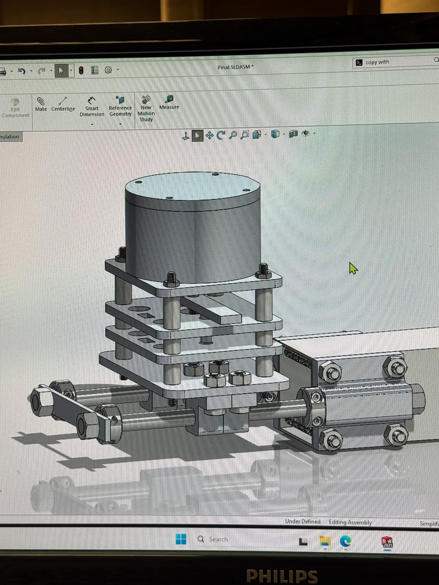
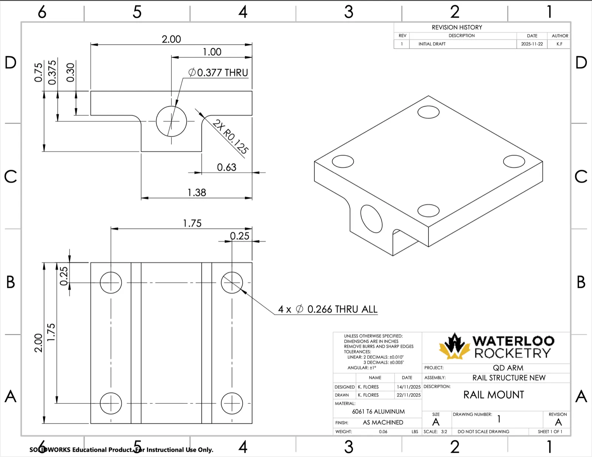
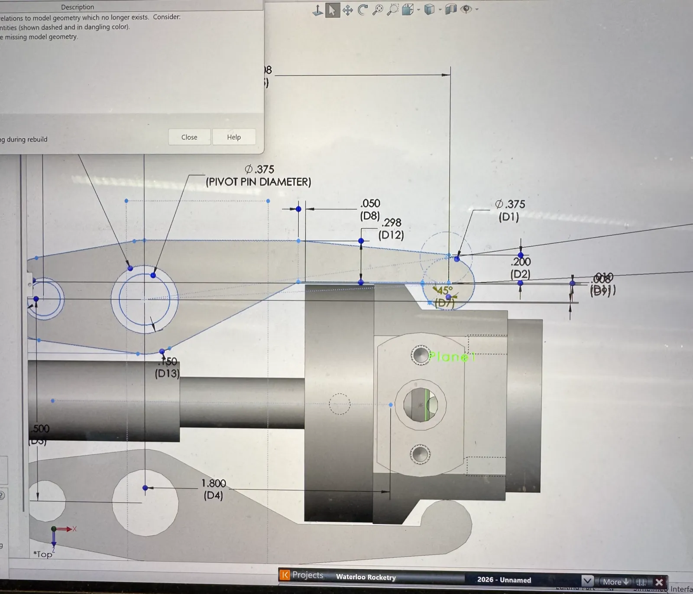
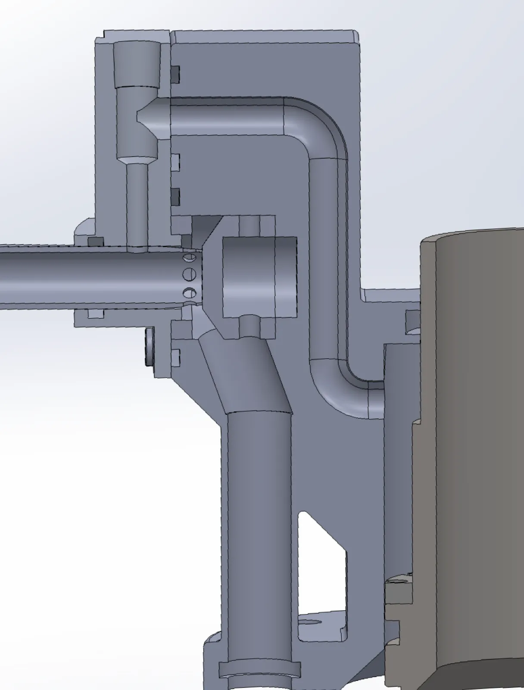
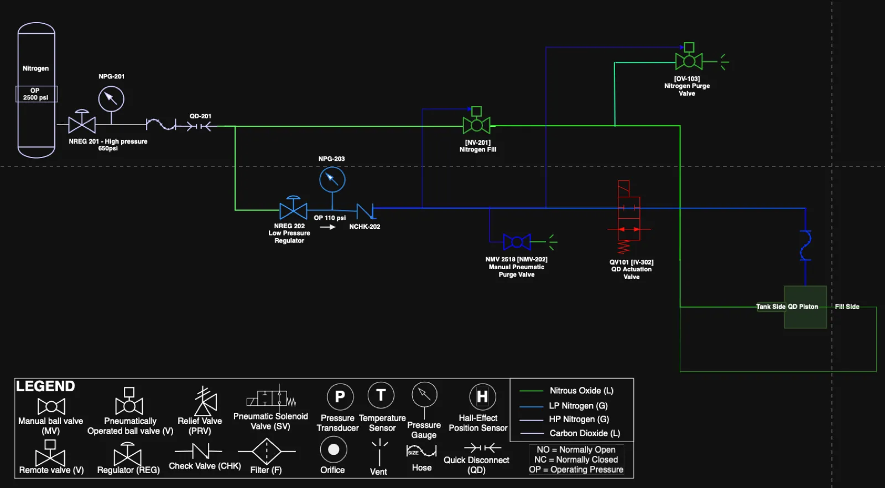
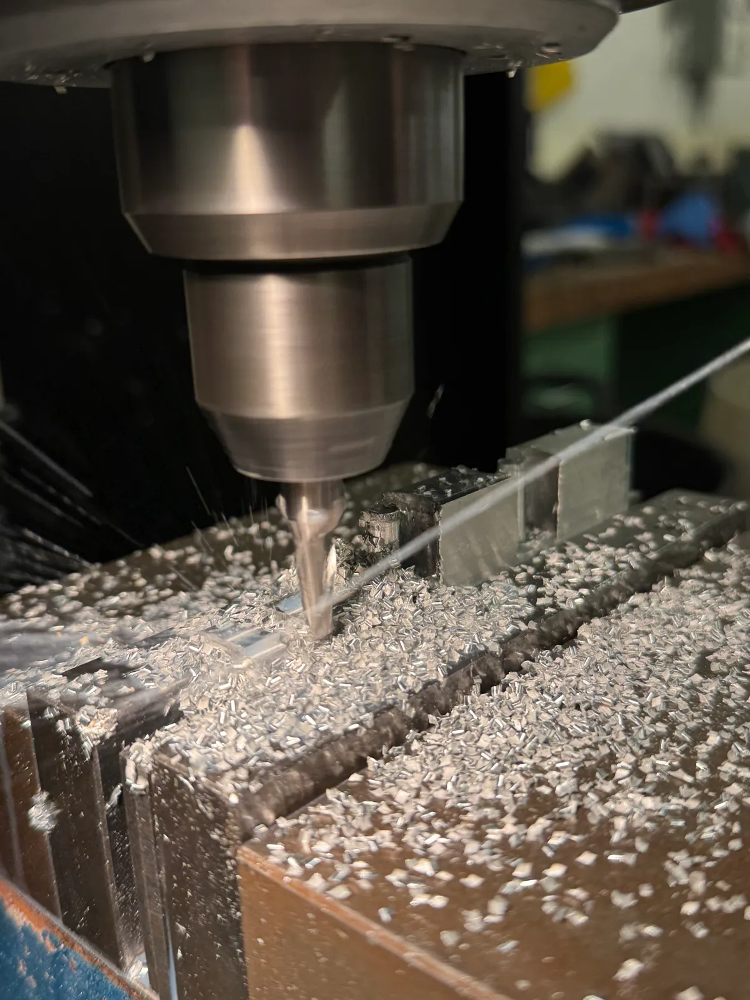
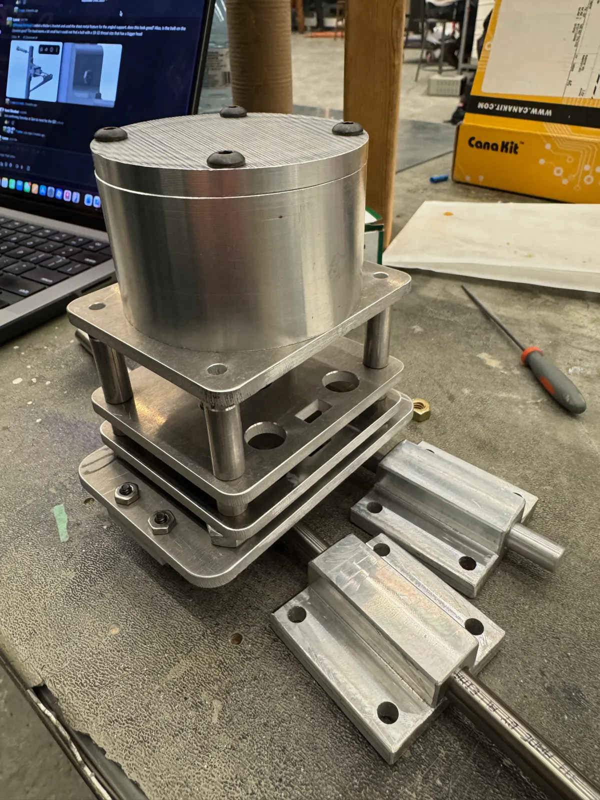

Waterloo Rocketry · Propulsion Team · Oct 2025 — Present
The goal of this project was to design a pneumatically controlled latching mechanism to fill the UW 2026 rocket with oxidizer, reliably disconnecting on command to allow the engine's injector valves to open. Joining Waterloo Rocketry and taking on this as a first project was a massive step up from my solo robotics builds. It was my first deep dive into an industry-standard design cycle, where I had to learn formal failure mode mitigation (FMEA), rigorous documentation, and structured testing.

Piston CAD Model
Technical Drawing
Latch Mechanism
Valve Integration CAD
P&ID DiagramActually machining and welding the parts myself revealed a lot about how design and material selection directly impact manufacturing. For example, I originally planned to use tight-tolerance guide rods to slide the piston away from the rocket body after the disconnect. What I didn't realize on the screen was that because my bores were machined across two separate mounting brackets, aligning those rails perfectly in the real world was virtually impossible. It forced me to completely rethink my approach, ultimately resulting in a much more robust, self-aligning mechanism.

CNC Machining
Final AssemblyDuring assembly, I verified that all parts met their dimensional tolerances before moving into validation. I wrote the final test procedures and created the plumbing schematics to pressurize the system, simulating the conditions of a real launch. Seeing the system successfully achieve nominal operation during testing was very rewarding.
As the build progressed, I worked closely with other subsystem members to integrate the QD arm with the ongoing development of the internal injector valves. This meant resizing legacy valve CAD and modifying the rocket-side geometry to ensure everything interfaced properly with my new design.
Overall, the QD arm taught me what it actually takes to drive a piece of hardware through the entire design cycle, from a blank CAD file and theoretical math to a fully integrated, functional system on a rocket.